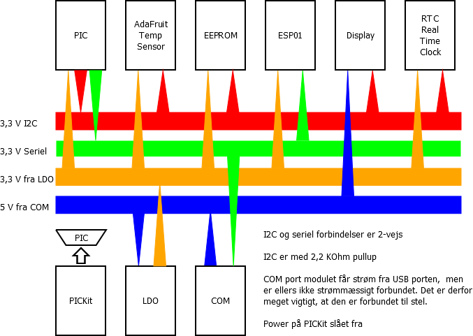

Resume
I forbindelse med lÃļsning af opgave i Embedded Controller skulle
vi lave en styring af ESP01 fra PIC kreds. Opgaven var, at vise en
webside med data fra PIC kredsen og datalogger, som var opbygget i
tidligere fag. Derfra kom ideen til, at lave en fuldt understÃļttelse af alle funktioner som ESP01 har.
PIC kreds brugt i udvikling af projektet: PIC18F26K22
ESP01 er firmware opdateret til [TODO]
EEPROM henviser til ekstern eeprom
Copyright 2019-2020 Karsten 'Kaki' Reitan SÃļrensen
version 1.00-development
MÃĨl med projektet
[TODO]
TCP/IP forbindelse
SoftAP funktionen
HTML side
HÃĨndtering af GET request
- TÃĶnde og slukke lysdiode pÃĨ IO pin
Projekt struktur
- Header Files
- Important Files
- lib_eeprom
- lib_esp
- lib_i2c
- lib_lcd
- lib_rtc
- lib_spi
- Linker Files
- Source Files
Fil struktur
- build
FIler genereret af compiler
- datablade
Datablade for den anvendte PIC kreds, ESP01 og andre mere eller mindre relevante dokumenter
ESP01 -
MRF89XAM8A - mappe til fremtidig udvidelse til LORA modul
- debug
Filer genereret af compiler
- dist
Filer generet af compiler
- docs
mainpage.dox bliver brugt af Doxygen til at generere forsiden pÃĨ projektet
- doxygen
Indeholder den overordnede dokumentation af projektet i HTML version. Genreret med Doxygen
- mcc_generated_files
Filer genereret af CodeConfigurator
- nbproject
Filer genereret af compiler
- powerpoints
Mappe lavet til at holde produceret undervisnings materiale
Hardware
Diagram over anvendt system

VÃĶrktÃļjer
- MPLAB X IDE v5.25
IDE fra Microchips baseret pÃĨ Netbeans. Indeholder alle biblioteker til de forskellige PIC kredse.
Webside: https://www.microchip.com/mplab/mplab-x-ide
- Microchip Code Configurator
HjÃĶlpevÃĶrktÃļj til MPLABS IDE, som gÃļr det nemmere, at konfigurerer de forskellige dele af PIC kredsens opsÃĶtning.
- Microchip XC8 compiler v2.10
Webside: https://www.microchip.com/mplab/compilers
- Doxygen v1.8.17
Kan implementeres som plugin i MPLabs / NetBeans IDE.
Fordi jeg har skrevet stÃļrstedelen af kommentarer pÃĨ dansk skal DoxyWizard instilles til Windows-1252 formattering af teksten. I IDE kan man bruge UTF-8 som normalt.
DoxÃ―gen dokumentation: https://http://www.doxygen.nl/index.html
Kilder, inspiration og lÃĶring
Licens
This program is free software; you can redistribute it and/or modify
it under the terms of the GNU General Public License as published by
the Free Software Foundation; either version 2 of the License, or
(at your option) any later version.
This program is distributed in the hope that it will be useful,
but WITHOUT ANY WARRANTY; without even the implied warranty of
MERCHANTABILITY or FITNESS FOR A PARTICULAR PURPOSE. See the
GNU General Public License for more details.
You should have received a copy of the GNU General Public License
along with this program; if not, write to the Free Software
Foundation, Inc., 51 Franklin Street, Fifth Floor, Boston, MA 02110-1301, USA.
 1.8.17
1.8.17